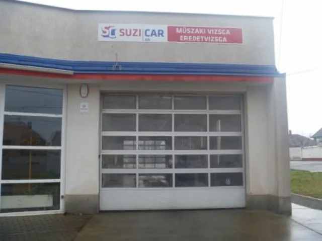

4,7 – 320 Google-értékelés
Műszaki vizsga, eredetvizsga és autójavítás Pécsen, a Komlói úton
Személyautó, gázüzemű autó, motor, teherautó, pótkocsi és lassú jármű vizsgáztatása egy helyen – a volt Suzuki szerviz helyszínén.
- Hétfőtől péntekig 7:45–16:30
- 7628 Pécs, Komlói út 73.
- Vizsga és javítás egy helyen
- 4,7 ★320 Google-értékelés
- 6járműtípus vizsgáztatása
- Eredetvizsgahelyben, a vizsga mellett
- Javításdiagnosztika, állapotfelmérés
Mire készüljön a vizsga előtt?
Válassza ki a járművét: megmutatjuk, mit hozzon magával, és mit érdemes otthon átnézni, hogy elsőre átmenjen. A pontokat ki is pipálhatja.
Személyautó
Műszaki vizsga és eredetvizsga
Ezt hozza magával
Ezt nézze át előtte
Vizsgáztatás és javítás egy telephelyen
Vizsgáztatás
Gyors, megbízható és szakszerű megoldás minden autótulajdonosnak – a gázüzemű járművekre külön figyelmet fordítunk.
- Műszaki vizsga személyautó
- Gázüzemű autóvizsgáztatás a hatályos előírások szerint
- Motorvizsga
- Tehergépkocsi-vizsgáztatás
- Pótkocsi-vizsgáztatás
- Lassújármű-vizsgáztatás
- Eredetvizsgálat
Javítás
Szervizünk modern diagnosztikai eszközökkel és jól képzett szakemberekkel dolgozik.
- Teljes körű autójavítás
- Motordiagnosztika
- Állapotfelmérés pl. vásárlás előtt
Ha a vizsgán hiba derül ki, a javítás ugyanitt elvégezhető.

A volt Suzuki szerviz helyén
„Ügyfeleinket a Komlói úton, a volt Suzuki szerviz helyszínén várjuk, ahol gyors és kényelmes ügyintézéssel, valamint ügyfélközpontú kiszolgálással segítjük autójuk karbantartását és javítását.”
Pécs, Komlói út 73. Hétfőtől péntekig 7:45 és 16:30 között várjuk.
Amit az ügyfelek írnak
320 értékelés a Google-on
„Gyors, korrekt ügyintézés! Profi dolgozók!”Google-vélemény
„…nagyon összeszokott gyors csapatmunka.”Google-vélemény műszaki vizsgáról (részlet)
Időpontkérés
Írja meg, milyen járművel és mire jönne, és visszahívjuk egy időponttal. Ha sürgős, hívjon:
+36 72 781 182Gyakori kérdések
Kérdése van? Hívjon a +36 72 781 182-es számon, vagy írjon: suzicarkft@gmail.com
Milyen járműveket vizsgáztatnak?
Személyautót, gázüzemű autót, motort, tehergépkocsit, pótkocsit és lassú járművet.
Van eredetvizsga is?
Igen, eredetvizsgálatot is végzünk, ugyanitt, a Komlói úton.
Gázüzemű autót is vizsgáztatnak?
Igen. A gázüzemű járművek műszaki vizsgáztatására külön figyelmet fordítunk, hogy ezek az autók is megfeleljenek a hatályos előírásoknak, és biztonságosan közlekedhessenek.
Javítanak is, vagy csak vizsgáztatnak?
Teljes körű gépkocsijavítást, motordiagnosztikát és állapotfelmérést is végzünk.
Mennyibe kerül a műszaki vizsga?
A vizsga díja a jármű típusától függ. Hívjon minket, és megmondjuk: +36 72 781 182.
Hol vannak, és mikor vannak nyitva?
Pécsen, a Komlói út 73. alatt, a volt Suzuki szerviz helyszínén. Hétfőtől péntekig 7:45 és 16:30 között, hétvégén zárva.
Kapcsolat
- Cím
- 7628 Pécs, Komlói út 73.
Útvonaltervezés - Telefon
- +36 72 781 182
- suzicarkft@gmail.com
- Nyitva
- Hétfő–péntek 7:45–16:30
Hétvégén zárva